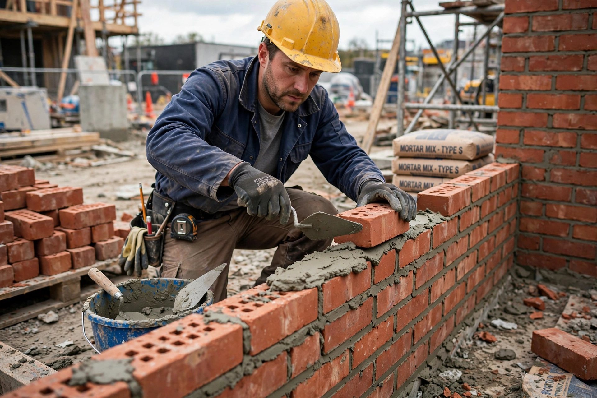

A bricklayer, also called a brick mason, is a skilled tradesperson who constructs brickwork by laying bricks, concrete blocks, and other masonry units with mortar.

Builds walls, chimneys, arches, patios and fireplaces; reads blueprints, mixes mortar, uses trowel, level, and plumb line. Apprenticeships typically last 3-4 years.
One of the oldest trades, with guilds in medieval Europe. Notable bricklayers include Winston Churchill as hobbyist. See Brick, Masonry, Stonemasonry.